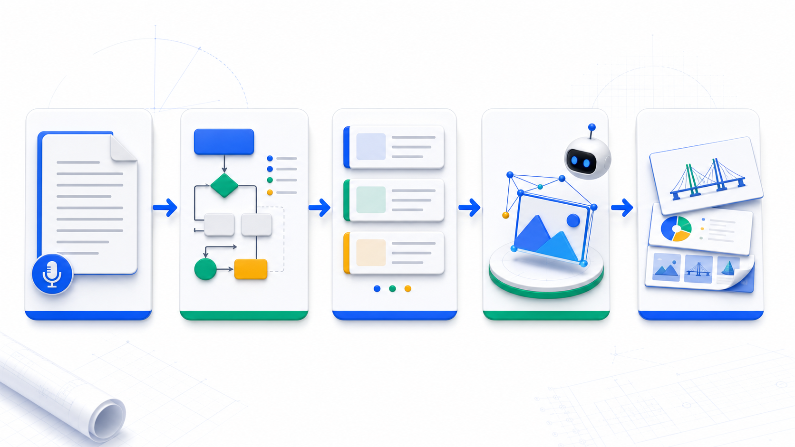
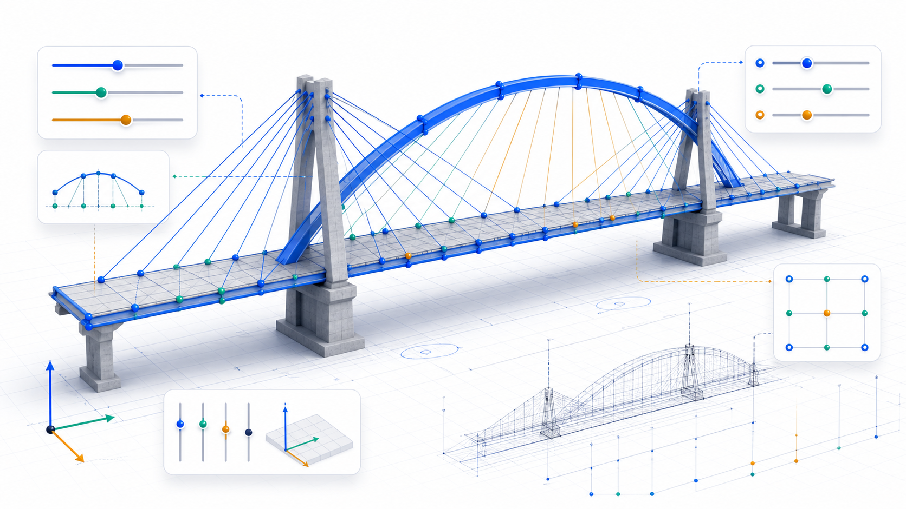
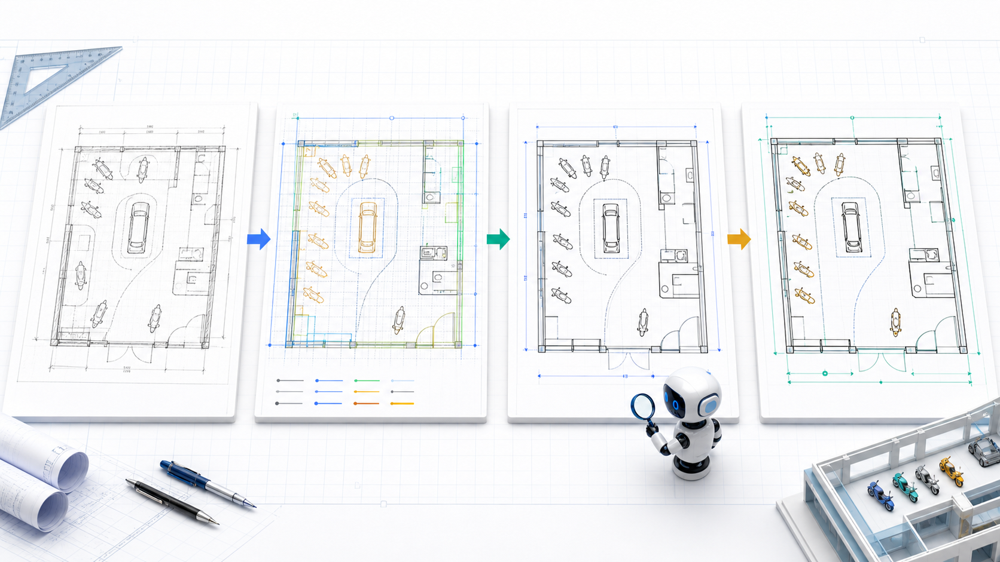

lecture-image-pack × Quarto RevealJS 测试
把 53 分钟技术分享拆成一组可讲、可展示、可继续生成图片的教学信息图页面。

正视俯视侧视

桥面、拱肋、吊杆、索塔、支座分别是什么。
谁连接谁，谁在上、下、两侧、跨中。
用关键点、间距、比例约束模型骨架。
要求 HTML 模型代码、节点坐标和单元信息。
“任何复杂的桥梁，它不过就是点和线，点和线的一个连接。”

项目目标：让甲方看到修改过程，也让后续门店拓展能复用同一套参数逻辑。
汇报顺序可以按教学逻辑“局部到整体”，也可以按招投标逻辑“场景到细节”。
“学习最重要的不是继续成为你自己，而是完成身份转换。”
先从结构清晰的拱桥或斜拉桥开始。
列构件、坐标、连接、比例和可调参数。
要求输出网页模型并保留参数入口。
OBJ、节点坐标、单元信息分别服务展示和计算。
把成功提示词和 QA 标准固化为可复用能力。